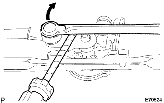
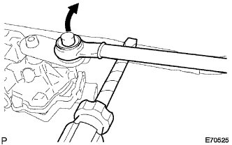
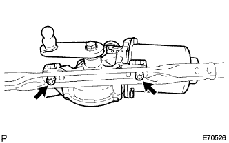

Wind Shield Wipmotor ASSY removal |
| 1. Remove the window shield wiper arm cover |
| 2. The front wiperarm RH is removed |
Remove the nut and remove the front wiperarm RH.
| 3. Remove the front wiperarm LH |
Remove the nut and remove the front wiperarm LH.
| 4. Food toe cowl top seal removal |
 |
Remove the six places on the clip and remove the bonnetto (hood) Tsu cowl top sticker.
| 5. Cowl Top Ventilator Louva RH |
 |
Remove the two clips and seven claws, and remove the cowl top ventilaarver RH.
| 6. Cowl Top Ventilator Louva LH removed |
 |
Remove one clip and eight claws, and remove the cowl top ventilaarver LH.
| 7. Wind shield wiplink asset removed |
Separate the connector of the windshield wipa motor.
 |
Remove the two bolts.
Wind shield wiperink ASSY is shifted to the right with a windshield wipa motor ASSY, and remove the rubber pin and remove it.
| 8. Remove the windshield wipmotor ASSY |
|  |
Use a flathead screwdriver with protective tape to separate the windshield wiperink arm from the crank arm pivot part of the windshield wipa motor ASSY.
|  |
Use a flathead screwdriver with protective tape to separate the windshield wiperink arm from the crank arm pivot part of the windshield wipa motor ASSY.
|  |
Use a torxo wrench (T30) to remove the two bolts and remove the windshield wipa motor ASSY from the windshield wiperink ASSY.